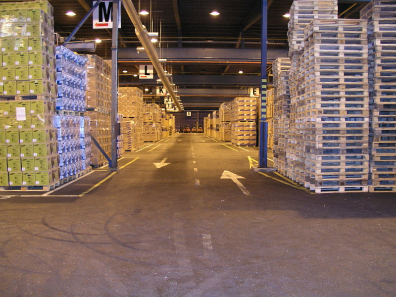
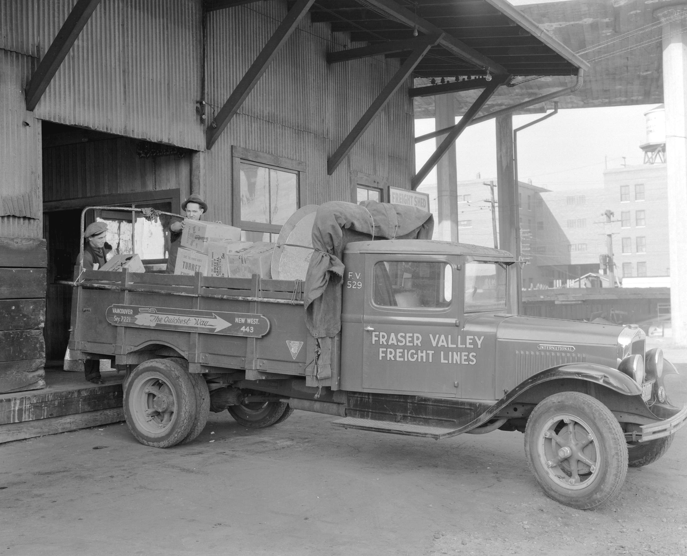

01 — THE PROCESS
Five steps
of SCM
Coordinate the journey from an idea to a customer, then learn from what comes back.
- 01Plan
- 02Source
- 03Make
- 04Deliver
- 05Return
BBA · SUPPLY CHAIN MANAGEMENT
BBA Student Supply Chain Enthusiast
Curious about how better decisions move goods, businesses and communities forward.

RASEL · BBA SCM STUDENT
NICE TO MEET YOU
I’m Rasel, a student of Supply Chain Management with a growing interest in the systems that connect suppliers, businesses and customers.
I’m currently pursuing a Bachelor of Business Administration (BBA) in Supply Chain Management. Through coursework and case studies, I’m building a practical understanding of planning, procurement, logistics and responsible operations.
This portfolio brings together the concepts I’m exploring and academic projects that help me turn classroom ideas into clearer, more useful decisions.
SCM, MADE PRACTICAL
A few foundational ideas I’m learning to connect, measure and improve across the supply chain.
Coordinate the journey from an idea to a customer, then learn from what comes back.
Useful KPIs make bottlenecks visible and help teams track service, speed and reliability.
Build supply chains that create long-term value without shifting the cost to people or the planet.
Bring environmental thinking into sourcing, production, delivery and the product’s next life.
CLASSROOM TO CASE STUDY
Illustrative academic project concepts focused on better sourcing choices and more efficient movement of goods.
A weighted scorecard concept comparing suppliers on cost, quality, delivery reliability and sustainability criteria.
Discuss the approach
CASE STUDY / 02A classroom study concept exploring route consolidation, delivery windows and the trade-off between cost and service.
Discuss the approachAcademic case study concepts; project details can be updated as coursework develops.
Public-domain photos: Warehouse md17 by Paranoid and B.C. Electric Freight Truck by Stuart Thomson.
QUESTIONS, IDEAS, COLLABORATIONS
I’m always glad to connect with fellow students, supply chain professionals and curious minds.
raselsarker512@gmail.com